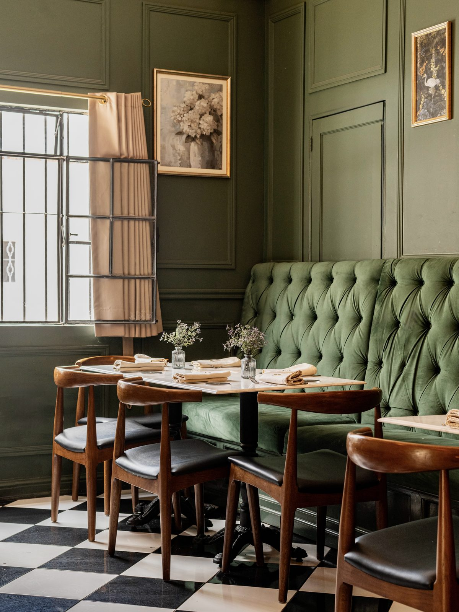
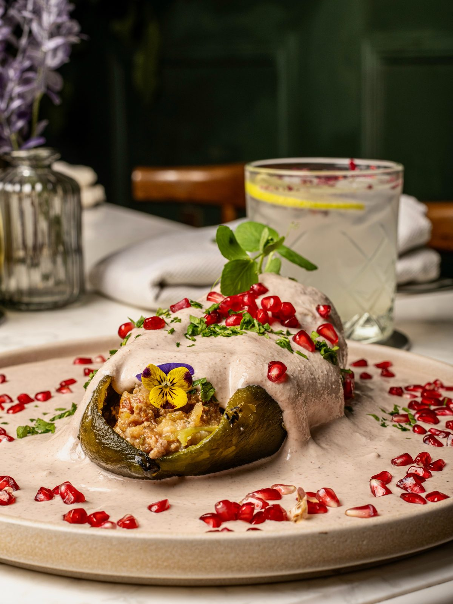
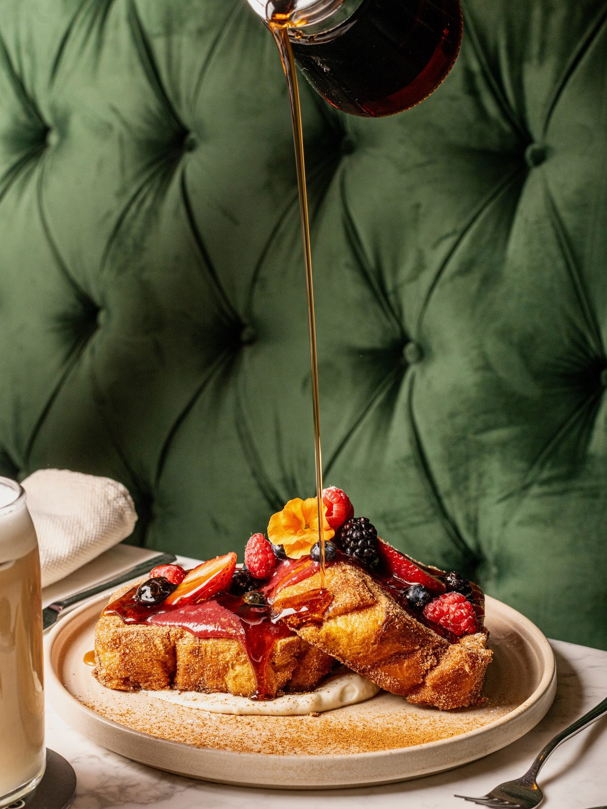
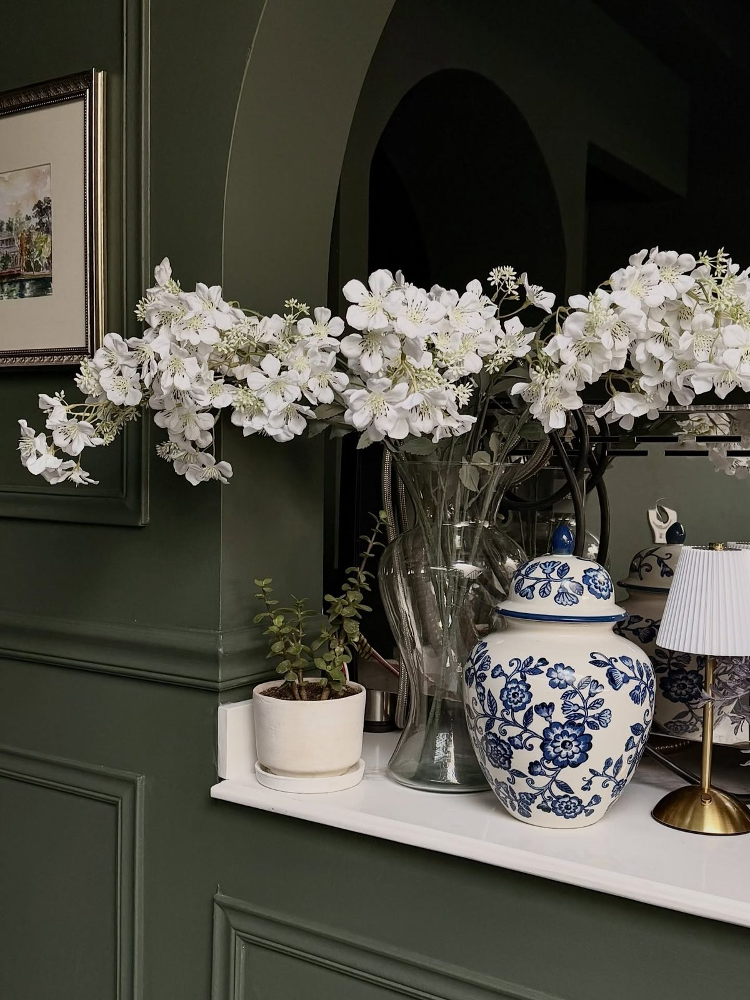
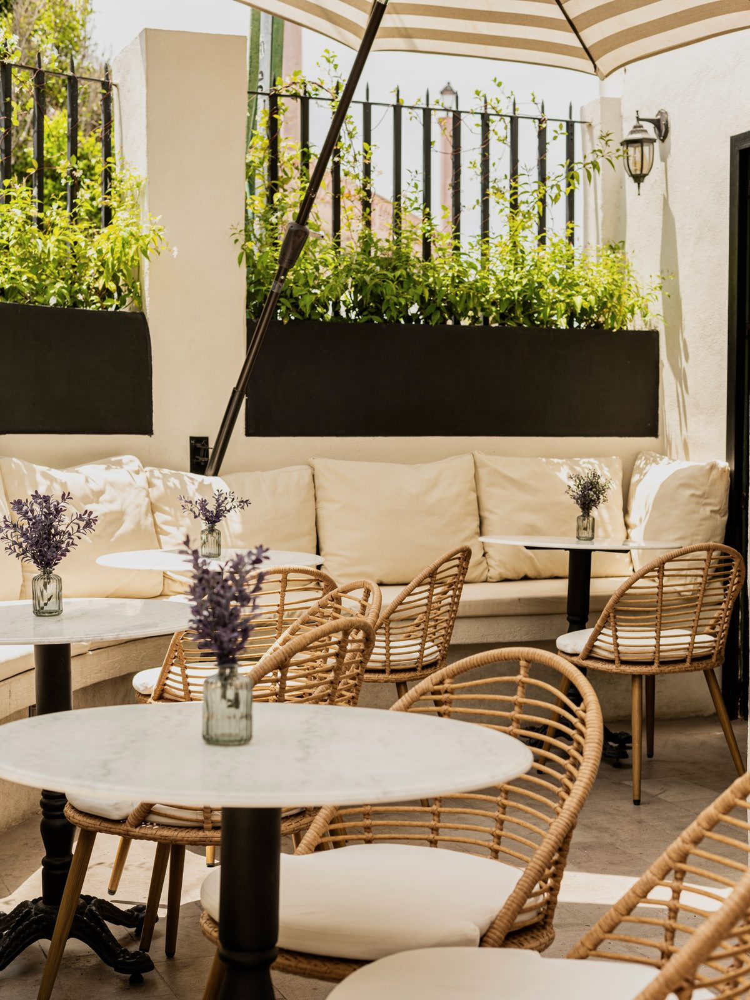
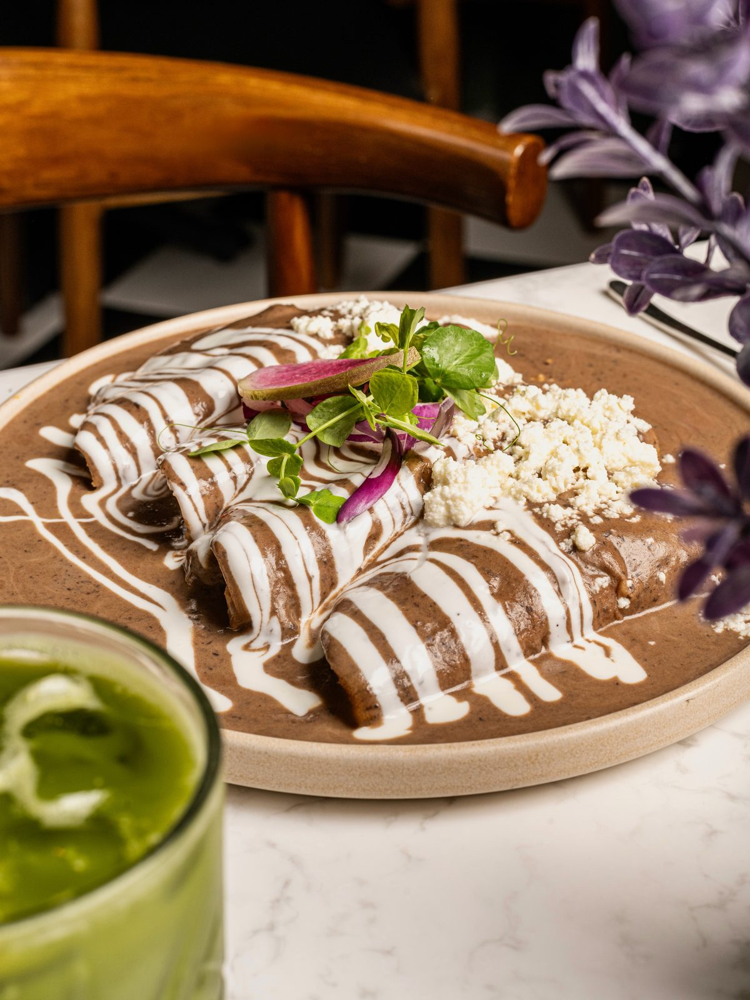
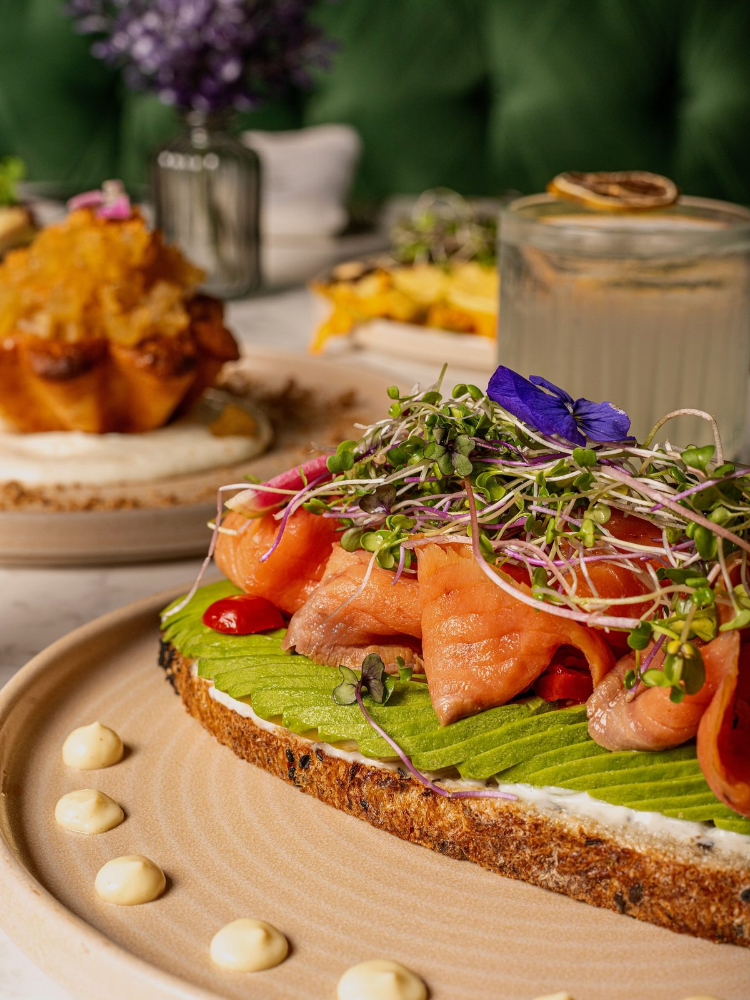
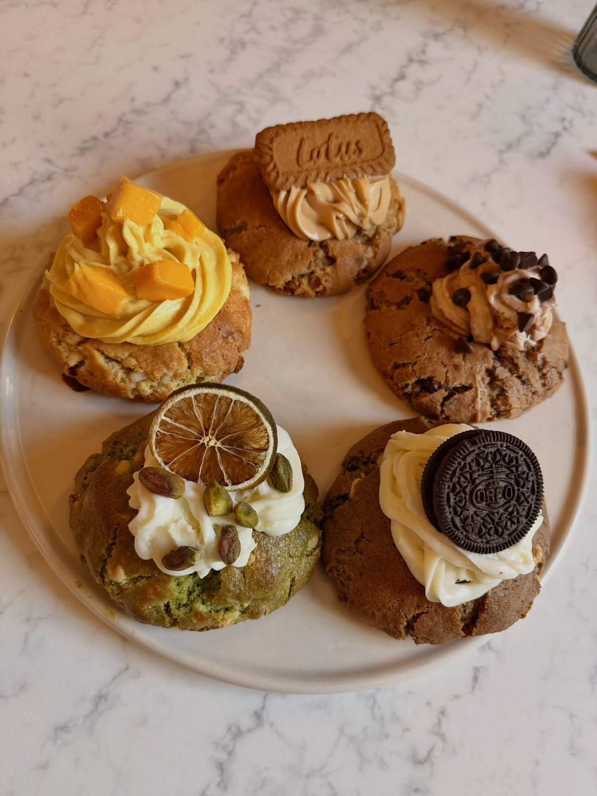

Bistró & Café · Querétaro
Cocina mexicana de autor
Elegancia parisina y el espíritu acogedor queretano, bajo un mismo techo de flores, café recién molido y pan salido de nuestro horno.
La Casa
Una casona porfiriana que huele a café y a flores
Casa Flora vive dentro de una casona porfiriana restaurada: techos altos, molduras neoclásicas, ventanales y una luz que se derrama sobre las mesas toda la mañana. Flores frescas por todas partes: en la barra, en las mesas, trepando el patio.
La cocina trabaja igual: sabores queretanos honrados y, después, renovados sin ruido. Todo lo que puede hacerse aquí se hace aquí: el pan, la repostería, las salsas, la nogada.
-
01
Panadería propia
Croissants, conchas y masa madre saliendo del horno cada mañana.
-
02
Café, en serio
Grano mexicano, molido al momento. Barra de espresso y café de olla.
-
03
De 8 a 10
Desayuno, comida, cena y una barra que se desvela los fines de semana.
Reconocimiento
Primer lugar, Cata a Ciegas — Sibaritas del Bajío 2025
Nuestros chiles en nogada ganaron el primer lugar frente a las cocinas más reconocidas de la región — a ciegas, sin más en el plato que el platillo mismo. Vuelven cada temporada, y sólo en temporada.
Galería
La casa, en imágenes








Visítanos
Ejército Republicano 51
La Santa Cruz, La Pastora
76025 Santiago de Querétaro, Qro.
- Horario
- Lunes a domingo
8:00 — 22:00 - Contacto
-
WhatsApp
442 580 5119